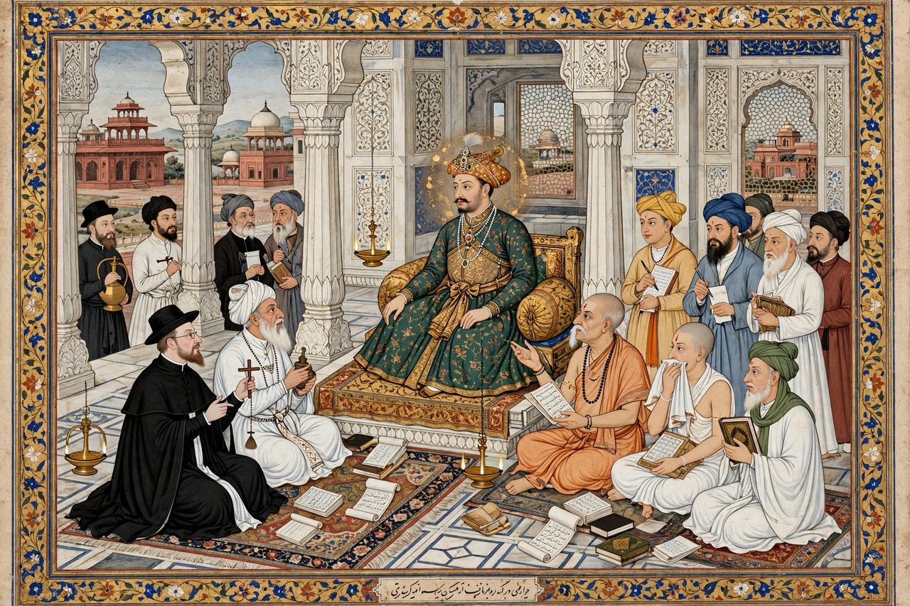

| Ibadat Khana | |
|---|---|
 | |
| Location | Fatehpur Sikri, Mughal Empire |
| Built | 1575 |
| Founder | Emperor Akbar |
| Purpose | House of worship and interfaith debate hall |
The Ibadat Khana (House of Worship) was a meeting house built in 1575 by the Mughal Emperor Akbar at Fatehpur Sikri, where scholars of different religions gathered to discuss their faiths in the emperor's presence. It became the centre of Akbar's evolving religious thought and of the debates that eventually produced his policy of sulh-i kul ("peace with all") and the syncretic Din-i Ilahi.
Akbar initially intended the Thursday-evening sessions for Muslim theologians, Sufis, and courtiers. Disillusioned by the quarrelling of the orthodox ulama — notably Makhdum-ul-Mulk and Shaikh Abdun Nabi — he opened the debates in 1578 to Hindus, Jains, Christians (Jesuit missionaries from Goa, including Rodolfo Acquaviva), Zoroastrians, and others. The Jain monk Hiravijaya Suri and the Parsi priest Meherji Rana were among the noted participants.
The discussions at the Ibadat Khana convinced Akbar that no single religion held a monopoly on truth. They fed directly into the Mahzar of 1579, which recognised the emperor as the final arbiter in religious disputes, and into his court culture of translation, in which works such as the Mahabharata and the Bible were rendered into Persian. The exact site of the building at Fatehpur Sikri remains debated among archaeologists.